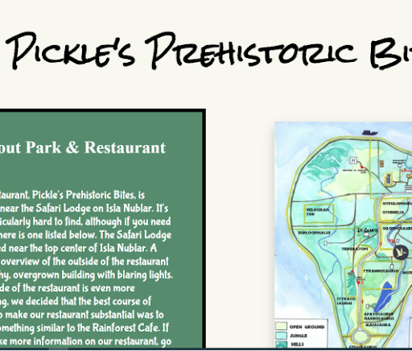

This page is specially made to show off some of my projects that I have had a chance to either complete or it helps hone my skills for coding in
general (can be both). My experience with these projects have helped mold my skills for coding and the experience from all of them generally
makes me confident in my abilities. But these projects were also done under lots of stress due to the nature of having to complete these on a
deadline and also having to learn what you're doing first but you will always find your footing in the end if you keep on pushing on. If you
want to try out or see my projects click on the button below the picture
Zen Gardon
Zen Garden compared to the other projects on this page is the earliest one on here and It was early enough in which I didn't have a lick of
Java Script in my code. Nonetheless the Zen Garden Project has helped with not only improving better on writing HTML but It was really
helpful with it giving me the ropes for CSS. CSS is basically the makeup of the website and it is what used to make a website look good.
Without it everything would be compressed including text, images, links, and more and it would just be a white background with
everything plastered on it. This website also helped with my designing skills as well.
Jurassic Park Website

This was a team project having to work with a partner to make a fake part of a hypothetical Jurassic Park website and that we were hired by
the Jurassic Park people to make this website. The theme of this website was a full service one and we had to make multiple pages that
would sell you food and check out that food. The website helped with teamwork, HTML, and CSS and it helped tremendously in all of those
aspects. We worked on this website for a long while and we also had to make it phone compatible. It was a fun time designing the website
and figuring out all the little intricate details or fixing any mistakes that may pop up.>
Certificate Generator
This website in all intents and purposes was made for mostly a joke, having to make a Certificate Generator that gave you a multitude of
options to create your own certificate. We were given free reign on what the options were so I tried to make it funny and make a bunch of
joke options. Even with its presentation and how it looks this website was the first that had forced us to use Java Script and even if I
didn't get too in depth with the JavaScript it was still a major help in understanding it even if only a little. It helped me believe that
I can actually understand JavaScript.
Budget Calculator
The budget calculator was a project that tasked us in making an automatic calculator that calculates your earrings and makes a list dividing
the earnings onto the list. This project isn't complete in my eyes because I wasn't able to implement some of the stuff I had when designing
it and also trying to design it better. But even with that I put this on here because it still helped me overall with figuring out
complicated code, learning more complex JavaScript, and learning how to use it to make some automatic calculations. It also has a Pi wheel
that I had to figure out how to port over and code it correctly to display what I wanted.